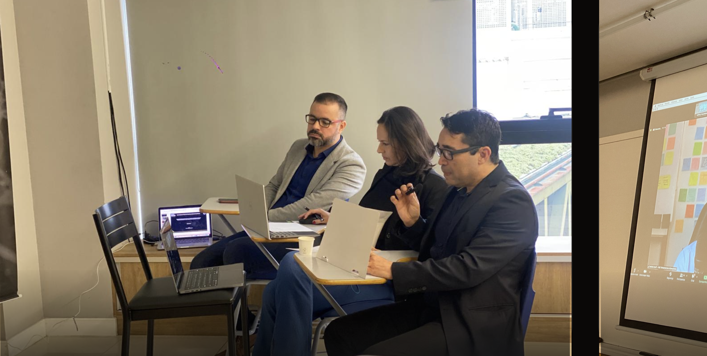
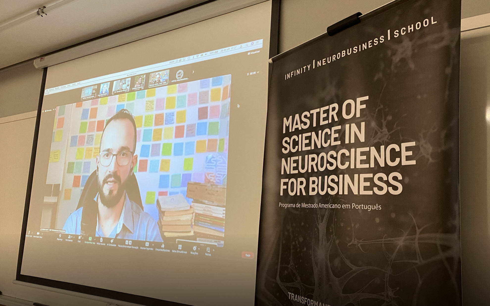

Bancas & Defesas
Ciência que se defende em público.
Momentos de qualificação e defesa: onde cada mestrando apresenta sua pesquisa diante de uma banca examinadora, sustentando hipóteses, método e resultados com rigor acadêmico.

Qualificação e Defesa presencial ou online
Apresentação do Projeto de Pesquisa perante banca e convidados

Banca examinadora
Doutores e mestres avaliadores

Qualificação híbrida
Avaliadores presenciais e remotos